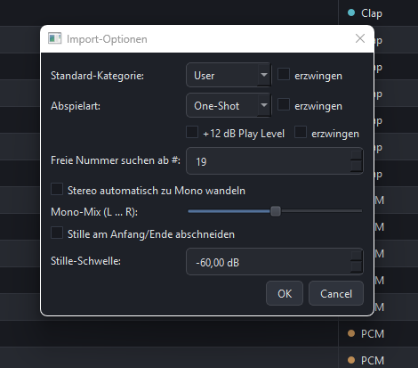
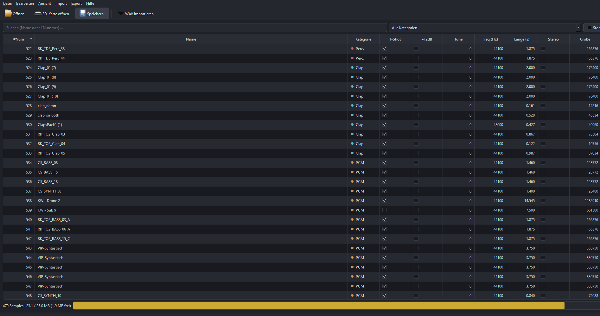

Software-Projekt
Korg Electribe 2
Sample Edit
Samples für die Korg Electribe 2 direkt am Rechner bearbeiten – schneiden, taggen, organisieren und zurück auf die Maschine spielen.
Zum DownloadPreview


Funktionen
Samples bearbeiten
Samples laden, schneiden und normalisieren – im passenden Format für die Electribe 2.
Slots verwalten
Sample-Slots der Maschine übersichtlich anzeigen, umsortieren und befüllen.
Export
Fertige Sample-Sets direkt als „all sample"-Datei für die Electribe 2 exportieren.